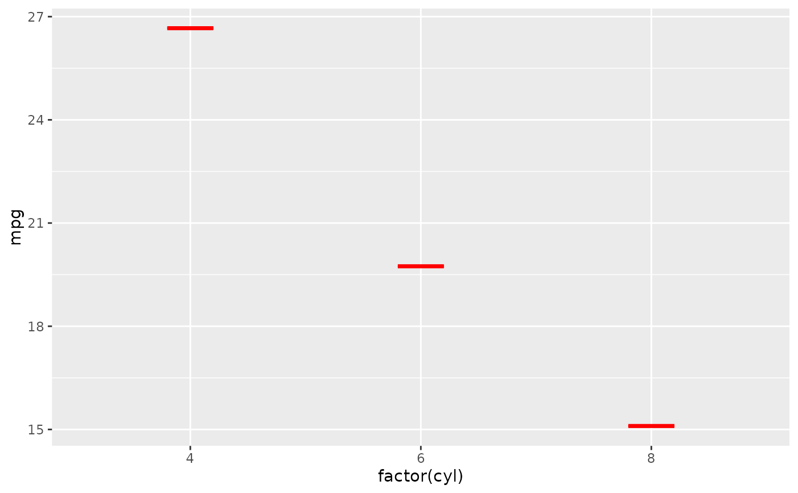

Generating the sum and adding a crossbar.
Examples
# \donttest{
# Simple summary function: use the mean as y, ymin, and ymax
mean_fun <- function(x) {
m <- mean(x, na.rm = TRUE)
data.frame(y = m, ymin = m, ymax = m)
}
ggplot2::ggplot(mtcars, ggplot2::aes(x = factor(cyl), y = mpg)) +
stat_sum_df(mean_fun)

# }